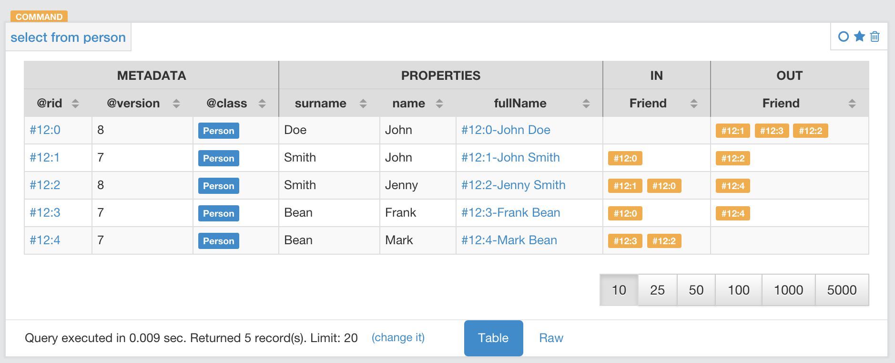
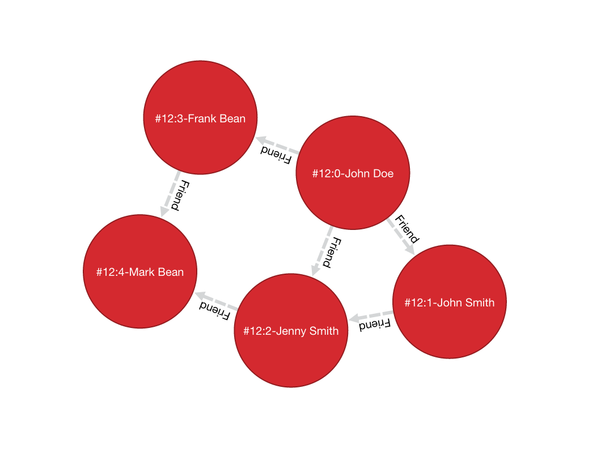

SQL - MATCH
Queries the database in a declarative manner, using pattern matching. This feature was introduced in version 2.2.
Simplified Syntax
MATCH
{
[class: <class>],
[as: <alias>],
[where: (<whereCondition>)]
}
.<functionName>(){
[class: <className>],
[as: <alias>],
[where: (<whereCondition>)],
[while: (<whileCondition>)],
[maxDepth: <number>],
[depthAlias: <identifier> ],
[pathAlias: <identifier> ],
[optional: (true | false)]
}*
[,
[NOT]
{
[as: <alias>],
[class: <class>],
[where: (<whereCondition>)]
}
.<functionName>(){
[class: <className>],
[as: <alias>],
[where: (<whereCondition>)],
[while: (<whileCondition>)],
[maxDepth: <number>],
[depthAlias: <identifier> ],
[pathAlias: <identifier> ],
[optional: (true | false)]
}*
]*
RETURN [DISTINCT] <expression> [ AS <alias> ] [, <expression> [ AS <alias> ]]*
GROUP BY <expression> [, <expression>]*
ORDER BY <expression> [, <expression>]*
SKIP <number>
LIMIT <number>
<class>Defines a valid target class.as: <alias>Defines an alias for a node in the pattern.<whereCondition>Defines a filter condition to match a node in the pattern. It supports the normal SQLWHEREclause. You can also use the$currentMatchand$matchedcontext variables.<functionName>Defines a graph function to represent the connection between two nodes. For instance,out(),in(),outE(),inE(), etc. For out(), in(), both() also a shortened arrow syntax is supported:{...}.out(){...}can be written as{...}-->{...}{...}.out("EdgeClass"){...}can be written as{...}-EdgeClass->{...}{...}.in(){...}can be written as{...}<--{...}{...}.in("EdgeClass"){...}can be written as{...}<-EdgeClass-{...}{...}.both(){...}can be written as{...}--{...}{...}.both("EdgeClass"){...}can be written as{...}-EdgeClass-{...}
<whileCondition>Defines a condition that the statement must meet to allow the traversal of this path. It supports the normal SQLWHEREclause. You can also use the$currentMatch,$matchedand$depthcontext variables. For more information, see Deep Traversal While Condition, below.<maxDepth>Defines the maximum depth for this single path.<depthAlias>(since 3.0M3) This is valid only if you have awhileor amaxDepth. It defines the alias to be used to store the depth of this traversal. This alias can be used in theRETURNblock to retrieve the depth of current traversal.<pathAlias>(since 3.0M3) This is valid only if you have awhileor amaxDepth. It defines the alias to be used to store the elements traversed to reach this alias. This alias can be used in theRETURNblock to retrieve the elements traversed to reach this alias.RETURN <expression> [ AS <alias> ]Defines elements in the pattern that you want returned. It can use one of the following:- Aliases defined in the
as:block. $matchesIndicating all defined aliases.$pathsIndicating the full traversed paths.$elements(since 2.2.1) Indicating that all the elements that would be returned by the $matches have to be returned flattened, without duplicates.$pathElements(since 2.2.1) Indicating that all the elements that would be returned by the $paths have to be returned flattened, without duplicates.
- Aliases defined in the
optional(since 2.2.4) if set to true, allows to evaluate and return a pattern even if that particular node does not match the pattern itself (ie. there is no value for that node in the pattern). In current version, optional nodes are allowed only on right terminal nodes, eg.{} --> {optional:true}is allowed,{optional:true} <-- {}is not.NOTpatterns (since 3.0.3 - experimental) Together with normal patterns, you can also define negative patterns. A result will be returned only if it also DOES NOT match any of the negative patterns, ie. if it matches at least one of the negative patterns it won't be returned.
Examples
The following examples are based on this sample data-set from the class People:


-
Find all people with the name John:
orientdb>
MATCH {class: Person, as: people, where: (name = 'John')} RETURN people--------- people --------- #12:0 #12:1 --------- -
Find all people with the name John and the surname Smith:
orientdb>
MATCH {class: Person, as: people, where: (name = 'John' AND surname = 'Smith')} RETURN people------- people ------- #12:1 ------- -
Find people named John with their friends:
orientdb>
MATCH {class: Person, as: person, where: (name = 'John')}.both('Friend') {as: friend} RETURN person, friend--------+--------- person | friend --------+--------- #12:0 | #12:1 #12:0 | #12:2 #12:0 | #12:3 #12:1 | #12:0 #12:1 | #12:2 --------+--------- -
Find friends of friends:
orientdb>
MATCH {class: Person, as: person, where: (name = 'John' AND surname = 'Doe')} .both('Friend').both('Friend') {as: friendOfFriend} RETURN person, friendOfFriend--------+---------------- person | friendOfFriend --------+---------------- #12:0 | #12:0 #12:0 | #12:1 #12:0 | #12:2 #12:0 | #12:3 #12:0 | #12:4 --------+---------------- -
Find people, excluding the current user:
orientdb>
MATCH {class: Person, as: person, where: (name = 'John' AND surname = 'Doe')}.both('Friend').both('Friend'){as: friendOfFriend, where: ($matched.person != $currentMatch)} RETURN person, friendOfFriend--------+---------------- person | friendOfFriend --------+---------------- #12:0 | #12:1 #12:0 | #12:2 #12:0 | #12:3 #12:0 | #12:4 --------+---------------- -
Find friends of friends to the sixth degree of separation:
orientdb>
MATCH {class: Person, as: person, where: (name = 'John' AND surname = 'Doe')}.both('Friend'){as: friend, where: ($matched.person != $currentMatch) while: ($depth < 6)} RETURN person, friend--------+--------- person | friend --------+--------- #12:0 | #12:0 #12:0 | #12:1 #12:0 | #12:2 #12:0 | #12:3 #12:0 | #12:4 --------+--------- -
Finding friends of friends to six degrees of separation, since a particular date:
orientdb>
MATCH {class: Person, as: person, where: (name = 'John')}.(bothE('Friend'){ where: (date < ?)}.bothV()){as: friend, while: ($depth < 6)} RETURN person, friendIn this case, the condition
$depth < 6refers to traversing the blockbothE('Friend')six times. -
Find friends of my friends who are also my friends, using multiple paths:
orientdb>
MATCH {class: Person, as: person, where: (name = 'John' AND surname = 'Doe')}.both('Friend').both('Friend'){as: friend}, { as: person }.both('Friend'){ as: friend } RETURN person, friend--------+-------- person | friend --------+-------- #12:0 | #12:1 #12:0 | #12:2 --------+--------In this case, the statement matches two expression: the first to friends of friends, the second to direct friends. Each expression shares the common aliases (
personandfriend). To match the whole statement, the result must match both expressions, where the alias values for the first expression are the same as that of the second. -
Find common friends of John and Jenny:
orientdb>
MATCH {class: Person, where: (name = 'John' AND surname = 'Doe')}.both('Friend'){as: friend}.both('Friend') {class: Person, where: (name = 'Jenny')} RETURN friend-------- friend -------- #12:1 --------The same, with two match expressions:
orientdb>
MATCH {class: Person, where: (name = 'John' AND surname = 'Doe')}.both('Friend'){as: friend}, {class: Person, where: (name = 'Jenny')}.both('Friend') {as: friend} RETURN friend
DISTINCT
In v 3.0 the MATCH statement returns all the occurrences of a pattern, even if they are duplicated. To have unique, distinct records as a result, you have to specify the DISTINCT keyword in the RETURN statement.
Example: suppose you have a dataset made like following:
INSERT INTO V SET name = 'John', surname = 'Smith'; INSERT INTO V SET name = 'John', surname = 'Harris' INSERT INTO V SET name = 'Jenny', surname = 'Rose'
This is the result of the query without a DISTINCT clause:
orientdb> MATCH {class: Person, as:p} RETURN p.name as name
--------
name
--------
John
--------
John
--------
Jenny
--------
And this is the result of the query with a DISTINCT clause:
orientdb> MATCH {class: Person, as:p} RETURN DISTINCT p.name as name
--------
name
--------
John
--------
Jenny
--------
IMPORTANT: in V 2.2 it was not possible to specify DISTINCT keyword in the RETURN block and the DISTINCT was implicit.
IMPORTANT: in V 3.0, using the legacy Java API, the behavior will be the same as in v 2.2
Context Variables
When running these queries, you can use any of the following context variables:
| Variable | Description |
|---|---|
$matched | Gives the current matched record. You must explicitly define the attributes for this record in order to access them. You can use this in the where: and while: conditions to refer to current partial matches or as part of the RETURN value. |
$currentMatch | Gives the current complete node during the match. |
$depth | Gives the traversal depth, following a single path item where a while: condition is defined. |
Use Cases
Expanding Attributes
You can run this statement as a sub-query inside of another statement. Doing this allows you to obtain details and aggregate data from the inner SELECT query.
orientdb> SELECT person.name AS name, person.surname AS surname,
friend.name AS friendName, friend.surname AS friendSurname
FROM (MATCH {class: Person, as: person,
where: (name = 'John')}.both('Friend'){as: friend}
RETURN person, friend)
--------+----------+------------+---------------
name | surname | friendName | friendSurname
--------+----------+------------+---------------
John | Doe | John | Smith
John | Doe | Jenny | Smith
John | Doe | Frank | Bean
John | Smith | John | Doe
John | Smith | Jenny | Smith
--------+----------+------------+---------------
As an alternative, you can use the following:
orientdb> MATCH {class: Person, as: person,
where: (name = 'John')}.both('Friend'){as: friend}
RETURN
person.name as name, person.surname as surname,
friend.name as firendName, friend.surname as friendSurname
--------+----------+------------+---------------
name | surname | friendName | friendSurname
--------+----------+------------+---------------
John | Doe | John | Smith
John | Doe | Jenny | Smith
John | Doe | Frank | Bean
John | Smith | John | Doe
John | Smith | Jenny | Smith
--------+----------+------------+---------------
Incomplete Hierarchy
Consider building a database for a company that shows a hierarchy of departments within the company. For instance,
[manager] department
(employees in department)
[m0]0
(e1)
/ \
/ \
/ \
[m1]1 [m2]2
(e2, e3) (e4, e5)
/ \ / \
3 4 5 6
(e6) (e7) (e8) (e9)
/ \
[m3]7 8
(e10) (e11)
/
9
(e12, e13)
This loosely shows that,
- Department
0is the company itself, manager 0 (m0) is the CEO e10works at department7, his manager ism3e12works at department9, this department has no direct manager, soe12's manager ism3(the upper manager)
In this case, you would use the following query to find out who's the manager to a particular employee:
orientdb> SELECT EXPAND(manager) FROM (MATCH {class:Employee,
where: (name = ?)}.out('WorksAt').out('ParentDepartment')
{while: (out('Manager').size() == 0),
where: (out('Manager').size() > 0)}.out('Manager')
{as: manager} RETURN manager)
Deep Traversal
Match path items act in a different manners, depending on whether or not you use while: conditions in the statement.
For instance, consider the following graph:
[name='a'] -FriendOf-> [name='b'] -FriendOf-> [name='c']
Running the following statement on this graph only returns b:
orientdb> MATCH {class: Person, where: (name = 'a')}.out("FriendOf")
{as: friend} RETURN friend
--------
friend
--------
b
--------
What this means is that it traverses the path item out("FriendOf") exactly once. It only returns the result of that traversal.
If you add a while condition:
orientdb> MATCH {class: Person, where: (name = 'a')}.out("FriendOf")
{as: friend, while: ($depth < 2)} RETURN friend
---------
friend
---------
a
b
---------
Including a while: condition on the match path item causes OrientDB to evaluate this item as zero to n times. That means that it returns the starting node, (a, in this case), as the result of zero traversal.
To exclude the starting point, you need to add a where: condition, such as:
orientdb> MATCH {class: Person, where: (name = 'a')}.out("FriendOf")
{as: friend, while: ($depth < 2) where: ($depth > 0)}
RETURN friend
As a general rule,
whileConditions: Define this if it must execute the next traversal, (it evaluates at level zero, on the origin node).whereCondition: Define this if the current element, (the origin node at the zero iteration the right node on the iteration is greater than zero), must be returned as a result of the traversal.
For instance, suppose that you have a genealogical tree. In the tree, you want to show a person, grandparent and the grandparent of that grandparent, and so on. The result: saying that the person is at level zero, parents at level one, grandparents at level two, etc., you would see all ancestors on even levels. That is, level % 2 == 0.
To get this, you might use the following query:
orientdb> MATCH {class: Person, where: (name = 'a')}.out("Parent")
{as: ancestor, while: (true) where: ($depth % 2 = 0)}
RETURN ancestor
Best practices
Queries can involve multiple operations, based on the domain model and use case. In some cases, like projection and aggregation, you can easily manage them with a SELECT query. With others, such as pattern matching and deep traversal, MATCH statements are more appropriate.
Use SELECT and MATCH statements together (that is, through sub-queries), to give each statement the correct responsibilities. Here,
Filtering Record Attributes for a Single Class
Filtering based on record attributes for a single class is a trivial operation through both statements. That is, finding all people named John can be written as:
orientdb> SELECT FROM Person WHERE name = 'John'
You can also write it as,
orientdb> MATCH {class: Person, as: person, where: (name = 'John')}
RETURN person
The efficiency remains the same. Both queries use an index. With SELECT, you obtain expanded records, while with MATCH, you only obtain the Record ID's.
Filtering on Record Attributes of Connected Elements
Filtering based on the record attributes of connected elements, such as neighboring vertices, can grow trick when using SELECT, while with MATCH it is simple.
For instance, find all people living in Rome that have a friend called John. There are three different ways you can write this, using SELECT:
orientdb>SELECT FROM Person WHERE BOTH('Friend').name CONTAINS 'John' AND out('LivesIn').name CONTAINS 'Rome'orientdb>SELECT FROM (SELECT BOTH('Friend') FROM Person WHERE name 'John') WHERE out('LivesIn').name CONTAINS 'Rome'orientdb>SELECT FROM (SELECT in('LivesIn') FROM City WHERE name = 'Rome') WHERE BOTH('Friend').name CONTAINS 'John'
In the first version, the query is more readable, but it does not use indexes, so it is less optimal in terms of execution time. The second and third use indexes if they exist, (on Person.name or City.name, both in the sub-query), but they're harder to read. Which index they use depends only on the way you write the query. That is, if you only have an index on City.name and not Person.name, the second version doesn't use an index.
Using a MATCH statement, the query becomes:
orientdb> MATCH {class: Person, where: (name = 'John')}.both("Friend")
{as: result}.out('LivesIn'){class: City, where: (name = 'Rome')}
RETURN result
Here, the query executor optimizes the query for you, choosing indexes where they exist. Moreover, the query becomes more readable, especially in complex cases, such as multiple nested SELECT queries.
TRAVERSE Alternative
There are similar limitations to using TRAVERSE. You may benefit from using MATCH as an alternative.
For instance, consider a simple TRAVERSE statement, like:
orientdb> TRAVERSE out('Friend') FROM (SELECT FROM Person WHERE name = 'John')
WHILE $depth < 3
Using a MATCH statement, you can write the same query as:
orientdb> MATCH {class: Person, where: (name = 'John')}.both("Friend")
{as: friend, while: ($depth < 3)} RETURN friend
Consider a case where you have a since date property on the edge Friend. You want to traverse the relationship only for edges where the since value is greater than a given date. In a TRAVERSE statement, you might write the query as:
orientdb> TRAVERSE bothE('Friend')[since > date('2012-07-02', 'yyyy-MM-dd')].bothV()
FROM (SELECT FROM Person WHERE name = 'John') WHILE $depth < 3
Unforunately, this statement DOESN"T WORK in the current release. However, you can get the results you want using a MATCH statement:
orientdb> MATCH {class: Person, where: (name = 'John')}.(bothE("Friend")
{where: (since > date('2012-07-02', 'yyyy-MM-dd'))}.bothV())
{as: friend, while: ($depth < 3)} RETURN friend
Projections and Grouping Operations
Projections and grouping operations are better expressed with a SELECT query. If you need to filter and do projection or aggregation in the same query, you can use SELECT and MATCH in the same statement.
This is particular important when you expect a result that contains attributes from different connected records (cartesian product). For instance, to retrieve names, their friends and the date since they became friends:
orientdb> SELECT person.name AS name, friendship.since AS since, friend.name
AS friend FROM (MATCH {class: Person, as: person}.bothE('Friend')
{as: friendship}.bothV(){as: friend,
where: ($matched.person != $currentMatch)}
RETURN person, friendship, friend)
The same can be also achieved with the MATCH only:
orientdb> MATCH {class: Person, as: person}.bothE('Friend')
{as: friendship}.bothV(){as: friend,
where: ($matched.person != $currentMatch)}
RETURN person.name as name, friendship.since as since, friend.name as friend
RETURN expressions
In the RETURN section you can use:
multiple expressions, with or without an alias (if no alias is defined, OrientDB will generate a default alias for you), comma separated
MATCH
{class: Person, as: person}
.bothE('Friend'){as: friendship}
.bothV(){as: friend, where: ($matched.person != $currentMatch)}
RETURN person, friendship, friend
result:
| person | friendship | friend |
--------------------------------
| #12:0 | #13:0 | #12:2 |
| #12:0 | #13:1 | #12:3 |
| #12:1 | #13:2 | #12:3 |
MATCH
{class: Person, as: person}
.bothE('Friend'){as: friendship}
.bothV(){as: friend, where: ($matched.person != $currentMatch)}
RETURN person.name as name, friendship.since as since, friend.name as friend
result:
| name | since | friend |
-------------------------
| John | 2015 | Frank |
| John | 2015 | Jenny |
| Joe | 2016 | Jenny |
MATCH
{class: Person, as: person}
.bothE('Friend'){as: friendship}
.bothV(){as: friend, where: ($matched.person != $currentMatch)}
RETURN person.name + " is a friend of " + friend.name as friends
result:
| friends |
------------------------------
| John is a friend of Frank |
| John is a friend of Jenny |
| Joe is a friend of Jenny |
$matches, to return all the patterns that match current statement. Each row in the result set will be a single pattern, containing only nodes in the statement that have an as: defined
MATCH
{class: Person, as: person}
.bothE('Friend'){} // no 'as:friendship' in this case
.bothV(){as: friend, where: ($matched.person != $currentMatch)}
RETURN $matches
result:
| person | friend |
--------------------
| #12:0 | #12:2 |
| #12:0 | #12:3 |
| #12:1 | #12:3 |
$paths, to return all the patterns that match current statement. Each row in the result set will be a single pattern, containing all th nodes in the statement. For nodes that have an as:, the alias will be returned, for the others a default alias is generated (automatically generated aliases start with $ORIENT_DEFAULT_ALIAS_)
MATCH
{class: Person, as: person}
.bothE('Friend'){} // no 'as:friendship' in this case
.bothV(){as: friend, where: ($matched.person != $currentMatch)}
RETURN $paths
result:
| person | friend | $ORIENT_DEFAULT_ALIAS_0 |
---------------------------------------------
| #12:0 | #12:2 | #13:0 |
| #12:0 | #12:3 | #13:1 |
| #12:1 | #12:3 | #13:2 |
$elements (since 2.2.1), the same as $matches, but for each node present in the pattern, a single row is created in the result set (no duplicates)
MATCH
{class: Person, as: person}
.bothE('Friend'){} // no 'as:friendship' in this case
.bothV(){as: friend, where: ($matched.person != $currentMatch)}
RETURN $elements
result:
| @rid | @class | name | ..... |
----------------------------------------
| #12:0 | Person | John | ..... |
| #12:1 | Person | Joe | ..... |
| #12:2 | Person | Frank | ..... |
| #12:3 | Person | Jenny | ..... |
$pathElements (since 2.2.1), the same as $paths, but for each node present in the pattern, a single row is created in the result set (no duplicates)
MATCH
{class: Person, as: person}
.bothE('Friend'){} // no 'as:friendship' in this case
.bothV(){as: friend, where: ($matched.person != $currentMatch)}
RETURN $pathElements
result:
| @rid | @class | name | since | ..... |
-------------------------------------------------
| #12:0 | Person | John | | ..... |
| #12:1 | Person | Joe | | ..... |
| #12:2 | Person | Frank | | ..... |
| #12:3 | Person | Jenny | | ..... |
| #13:0 | Friend | | 2015 | ..... |
| #13:1 | Friend | | 2015 | ..... |
| #13:2 | Friend | | 2016 | ..... |
IMPORTANT: When using MATCH statemet in OrientDB Studio Graph panel you have to use $elements or $pathElements as return type, to let the Graph panel render the matched patterns correctly
Arrow notation
out(), in() and both() operators can be replaced with arrow notation -->, <-- and --
Eg. the query
MATCH {class: V, as: a}.out(){}.out(){}.out(){as:b}
RETURN a, b
can be written as
MATCH {class: V, as: a} --> {} --> {} --> {as:b}
RETURN a, b
Eg. the query (things that belong to friends)
MATCH {class: Person, as: a}.out('Friend'){as:friend}.in('BelongsTo'){as:b}
RETURN a, b
can be written as
MATCH {class: Person, as: a} -Friend-> {as:friend} <-BelongsTo- {as:b}
RETURN a, b
Using arrow notation the curly braces are mandatory on both sides. eg:
MATCH {class: Person, as: a} --> {} --> {as:b} RETURN a, b //is allowed
MATCH {class: Person, as: a} --> --> {as:b} RETURN a, b //is NOT allowed
MATCH {class: Person, as: a}.out().out(){as:b} RETURN a, b //is allowed
MATCH {class: Person, as: a}.out(){}.out(){as:b} RETURN a, b //is allowed
Negative (NOT) patterns
(since 3.0.3 - experimental)
Together with normal patterns, you can also define negative patterns. A result will be returned only if it also DOES NOT match any of the negative patterns, ie. if the result matches at least one of the negative patterns it won't be returned.
As an example, consider the following problem: given a social network, choose a single person and return all the people that are friends of their friends, but that are not their direct friends.
The pattern can be calculated as follows:
MATCH
{class:Person, as:a, where:(name = "John")} -FriendOf-> {as:b} -FriendOf-> {as:c},
NOT {as:a} -FriendOf-> {as:c}
RETURN c.name